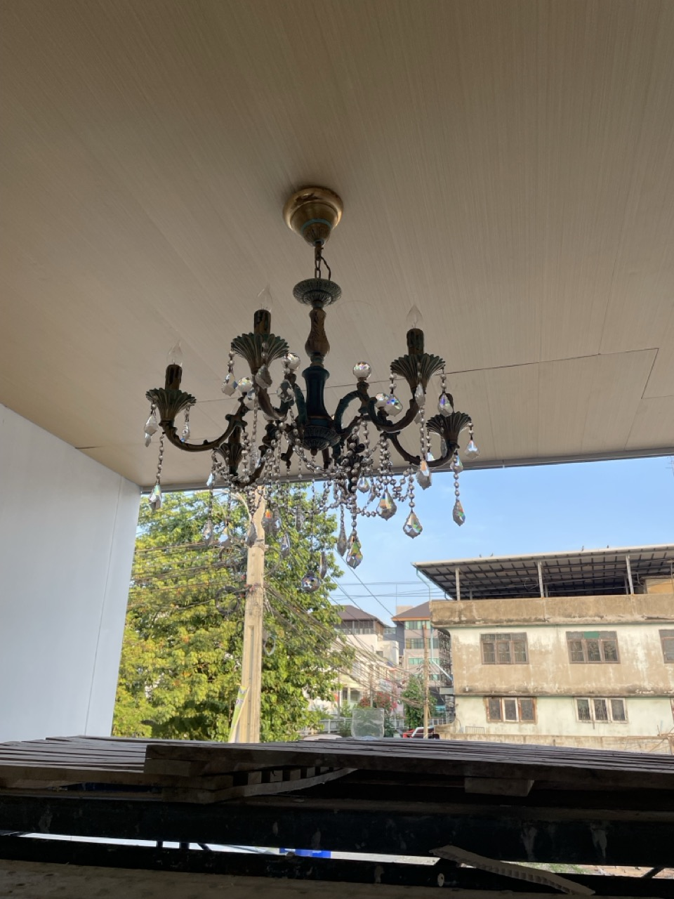

เกร็งกล้ามสมอง ก๊อกน้ำ และ Chandelierrrr
ช่วงสองสามวันมานี่นึกถึงคำๆนึง นั่งคิดทบทวนวนไปวนมาจนรู้สึกว่าเออ อันนี้น่าจะจริงแหะ เลยเอามาเขียนเรียบเรียง
นั่นคือการ เกร็งกล้ามสมอง
อะไรคือเกร็งกล้ามสมอง
คือจากประสบการณ์และความเข้าใจ การที่คนเราจะคิดอะไรสักอย่าง มันคือการส่งประจุไฟฟ้าเล็กๆแล่นไปตามสมอง ให้ไปสั่งให้ร่างกายทำอะไรสักอย่าง ให้กิน ให้เดิน ให้วาดรูป
คราวนี้ ที่เรารู้สึกว่ามันคือการเกร็ง เพราะการที่เราจะต้องทำอะไรสักอย่าง ถ้าเปรียบเป็นกล้ามเนื้อ จะเดิน ก็ต้องเคลื่อนไหวกล้ามเนื้อขาให้ขยับและลงตามที่เราตั้งใจ เกร็งกล้ามเนื้อตามมัดที่สมองเราสั่งได้ ซึ่งพอทำไปเรื่อยๆ จนเป็นธรรมชาติ การคิดถึงการเกร็งกล้ามเนื้อก็จะหายไป กลายเป็นเรื่องปกติ แค่คิด ขาก็เดินได้ตามธรรมชาติแล้ว
แล้วเกี่ยวอะไรกับการเกร็งกล้ามสมอง ก็คือถ้าเทียบเป็นกล้ามเนื้อเหมือนกัน การที่คนเราจะคิดทำอะไรสักอย่างที่ไม่คุ้นเคย ไม่ได้ทำทุกวันเป็นประจำ เช่นทำอะไรที่เป็นรูทีน ตื่นเช้า อาบน้ำ ไปกินข้าว นั่งรถไปทำงาน อะไรที่เกินกว่าขั้นต่ำของสมองจะต้องใช้ ก็คือต้องใช้พลังงานเพิ่มขึ้น ก็เหมือนกล้ามเนื้อจะต้องเริ่มเกร็งละ อ่า วันนี้รถเสีย ทำยังไงดี สมองแล่น คิดว่าวิธีแก้ไข ความเครียดเพิ่มขึ้น กว่าจะถึงที่ทำงาน ก็เหนื่อยและ ทั้งๆที่ไม่ได้ทำอะไรเลย
เคยอ่านคนวิเคราะห์ว่า มนุษย์หรือสิ่งมีชีวิต ต้องคอยรักษาพลังงานในร่างกายให้อยู่ในระดับที่เหมาะสม ถ้าเราใช้เกินขีดจำกัด ก็อาจจะทำให้เกิดอาการล้า ทำให้สภาพร่างกายไม่พร้อมจะสู้รับมือกับสิ่งที่จะเผชิญหน้าได้ ก็เลยคิดว่าน่าจะเกี่ยวข้องกัน
Flight or Fight หรือ จะหนีหรือจะสู้ ก็เป็นปฏิกิริยาตอบโต้ขั้นพื้นฐานของสมองที่เกิดขึ้นของสิ่งมีชีวิตหากเกิดเหตุการณ์ที่เป็นภัยต่อชีวิต เช่นจะถูกเสือกิน สมองต้องคิดหาทางออกว่า เชี่ย ทำไงดี ต้องหนีหรือสู้ จะทำยังไงให้ไอร่างกายอันบอบบางรอดพ้นจากสถานการณ์นี้เพื่อมีชีวิตอยู่ต่อไปได้
หากเป็นนักรบ เราถูกฝึกให้คิดถึงวิธีการสู้ตลอดเวลา ตั้งท่ารับมือกับสถานการณ์ตรงหน้าได้อย่างมั่นใจ ทำมันซ้ำๆจนเป็นธรรมชาติ การต่อสู้จึงไม่ต้องใช้พลังงานมากเกินจำเป็น เก็บไว้คิดส่วนการวางแผน เพราะร่างกายมันรู้อยู่แล้วว่าจะตอบโต้ยังไง ต่างกับพวกมนุษย์เงินเดือน เจอเสือทีนึง สมองช็อตลงไปนอนให้มันกินเรียบร้อย คิดอะไรไม่ทัน เพราะสมองไม่เคยต้องคิดอะไรเกินกว่า วันนี้ตอนเที่ยงจะกินอะไรดี
การมีภูมิคุ้มกันที่ดี กับร่างกายก็จะเหมือนการไปฉีดวัคซีน ให้ร่างกายได้เกิดการต่อต้านในระดับที่่ไม่ถึงตาย ให้เม็ดเลือดขาวทำงาน ได้เรียนรู้ว่าต้องสู้กับอะไร เวลาเจ็บป่วยเจอไวรัสในระดับที่ถึงตายได้ ร่างกายก็จะได้ปรับตัวได้ทัน
ก็คงเหมือนกันภูมิคุ้มกันทางสมอง หากเจอสถานการณ์ที่เครียด ในปริมาณที่พอเหมาะ สมองก็จะเริ่มเรียนรู้ หัดคิดถึงวิธีการแก้ไขปัญหา
ถ้าเปรียบกับสิ่งที่เราทุกคนรู้จัก คงจะเหมือนกับการได้ไปเรียนในรั้วการศึกษา ที่ทุกอย่างมีปัญหา มีโจทย์ให้สมองได้เริ่มแก้ไข แต่ถึงแม้ว่าจะผิด ก็ยังไม่มีผลกระทบที่ถึงแก่ชีวิต มีเกราะป้องกันผู้เรียน เพื่อให้ฝึกสมอง ได้เรียนรู้ว่าอะไรคือปัญหา และต้องแก้กับมันยังไง เมื่อออกมาแก้ปัญหาในชีวิตจริง สมองที่เคยถูกฝึกมาว่า ถ้าเจอคนไม่ดี ก็ต้องระวัง และแจ้งตำรวจหากเกิดเหตุด่วน (ซึ่งบ้านเราแม่งประหลาด แต่ไว้อีกประเด็นนะ)
เข้าเรื่อง
ทั้งหมดนี่เล่ามาทำไม ก็คือ เพราะสมองลิงของผม ไม่เคยต้องเรียนรู้มาก่อนว่า ไอการทำประปาในบ้านเนี่ย แม่งเป็นอะไรที่ปวดหัว น่ากลัว และมีผลกระทบอย่างใหญ่หลวงมาก หากไม่ได้วางแผนแต่แรกให้ดีๆ
เรื่องมันเกิดที่ว่า บ้านตอนแรกผมจะมีสี่ห้องน้ำ ซึ่งห้องผมและห้องแม่จะมีห้องน้ำส่วนตัว คราวนี้พอสร้างไปสักพักก็รู้สึกว่า พื้นที่มันเล็กลงไปเยอะ และต้องคอยดูแลรักษาซึ่งเพิ่มทั้งค่าใช้จ่ายและพลังงานในการไปดูแลแยกกัน เลยคุยและตัดสินใจจะรวมห้องน้ำกันตรงกลาง เพราะห้องเราอยู่ข้างกันพอดี
ซึ่งพอขั้นตอนตอนนั้นมันมาอยู่ที่เทปูนที่พื้นไปแล้ว ทำให้พื้นห้องน้ำที่เคยมีของห้องแม่ต่ำ และพื้นข้างๆที่จะเป็นทางเดินแต่ถูกยุบรวมเป็นห้องน้ำ มันสูงกว่าห้องน้ำที่ควรเป็น
การแก้ปัญหาขั้นแรกก็เลยต้องปรึกษากับนักออกแบบ
จะให้รบกวนกับสถาปนิกคนแรกก็งานจบไปแล้ว แถมถ้าให้เขาออกแบบก็จะมีค่าใช้จ่ายตามมาแน่นอน เขาปิดงานไปหลายเดือนแล้ว ก็ไม่อยากจะไปรื้อขนให้เสียเวลา เลยเลือกอีกออฟชันนึง คือการไปพึ่งนักออกแบบของบุญถาวร
ก่อนที่เราจะตัดสินใจรวมห้องน้ำ เราได้ไปเลือกซื้อของจากบุญถาวรมาเรียบร้อย อุปกรณ์ในห้องน้ำ เราก็มีเวลาไปเลือกของที่ตัวเองจะใช้กันมา หาข้อมูล เทียบราคา ดูการใช้งานที่ตัวเองชอบ ผมเลือกเป็นแบบฝังเข้าผนัง เพราะไม่อยากให้เห็นสายท่อที่ออกจากนอกกำแพง เวลาทำความสะอาดมันจะได้ง่าย และไม่สกปรกด้วย มีแค่หัวก๊อก หัวฝักบัว และเรนชาวเวอ คลีนๆฟินๆ นี่แหละห้องน้ำที่อยากได้
คราวนี้พอรวมห้องน้ำ อ่าว ของทุกอย่างที่ซื้อมา มันก็จะต้องรวมกัน ก็ต้องวุ่นวายเลือกว่าใครจะคืนหรือเปลี่ยนอันไหนดี อ่างตอนแรกมีเหลี่ยมมีกลม อะ เปลี่ยนเอากลมนะ เหลี่ยมเอาไปคืนเป็นอย่างอื่น วุ่นวายๆ แล้วตอนให้เขาออกแบบห้องน้ำรวมใหม่ เราก็บอกกำกับไปว่า ให้เอาอุปกรณ์ที่ซื้อมาใส่ไปด้วยนะครับ (ตรงนี้ทดไว้ในใจนะครับ) พอเราเสร็จเรื่องนี้ปุ๊บ เราก็มูฟออน เอาสมองที่เหนื่อยจากการต้องคิดแก้ปัญหาพวกนี้วางไว้ และไปทำเรื่องอื่นต่อ เพราะช่วงนั้นไม่ได้มีแค่ห้องน้ำ แต่เราสองคนต้องช่วยดูกันทั้งบ้าน
พอแบบออกมาเสร็จ เราก็ดูกันเออ ชักโครกต้องวางแบบนี้ กั้นผนังแบบนี้ ฝักบัว กับอ่างอาบน้ำต้องแยกห้องกัน ตอนแรกก็คิดกันตั้งนานไม่ออกว่าจะทำยังไง วางตะแคงยังไงให้มันอยู่ห้องเดียวกันได้ ให้มันมีโซนเปียก โซนแห้งชัดเจน เวลาทำความสะอาดก็จะได้ง่าย เวลาอาบน้ำก็จะได้ไม่เลอะเทอะ เวลาใช้งานก็ใช้ได้พร้อมกันไม่ต้องหวงว่าจะไปรบกวนภารกิจใคร
เราดูกันรวมๆ ทุกอย่างออกมาโอเค ตามที่เราคิดเลยว่าเนี่ยแหละ แบบที่เราจะเอาไปให้ช่างเขาเทพื้นปูนและแก้ไขห้องน้ำต่อ เพราะช่วงนั้นเรากำลังจะก่อผนังห้องน้ำแล้ว เหลือแค่ห้องนี้ห้องสุดท้าย ช่างเขาจะได้ไปทำอย่างอื่นต่อ เราก็เลยไม่รีรอแอฟพรูฟแบบไปเรียบร้อย
แต่เอ๊ะ ฝักบัว กับก๊อกอ่างอาบน้ำ มันไม่เหมือนกับที่เราซื้อนะ แต่ของอย่างอื่นในห้องน้ำมันก็ไม่เหมือน ก็คงไม่มีปัญหาอะไรหรอกมั้ง ยังไงของมันก็มาตรฐาน
ความคิดนี้ขึ้นมาในหัว แต่มันดังแล้วก็หายไป เพราะสมองตอนนั้นไม่อยู่ในสภาวะที่จะทำอะไรต่อ เหนื่อยแล้ว ก็ปล่อยผ่าน เลิกเกร็ง
จนเวลาล่วงเลยผ่านไป ช่างก่อกำแพงเสร็จ ช่างประปาก็มาเดินท่อน้ำร้อนน้ำเย็น ดันเป็นห้องที่เทคนิคกับอุปกรณ์ไม่เหมือนและไม่เคยติดมาก่อนอีก ต้องโยงน้ำดีเข้าเครื่องทำน้ำร้อนเพื่อให้จ่ายออกไปตามจุดต่างๆในห้อง ก็ต้องมีช่างของมันอีก แรมในสมองน้อยละตอนนั้น
ตอนติดเสร็จก็ไปเช็ค อือ ติดสวยดีนะ เรียบร้อย ได้มีน้ำร้อนน้ำเย็นใช้
แต่เอ๊ะ ไอก๊อกเรามันจะใส่ได้ไหมนะ แต่คงไม่เป็นไร เพราะเขาก็ทำตามแบบ ไม่น่าพลาด แม่ก็เช็คแล้ว ก็ไม่น่าเป็นไรมั้ง
จนปูกระเบื้อง ทำห้องน้ำเรียบร้อยเสร็จ
วันที่ช่างติดตั้งอุปกรณ์ในห้องน้ำ ก็ถึงกับตะลึงกันหมด เพราะอุปกรณ์ที่เราซื้อมาเมื่อสองเดือนสอง ติดไม่ได้จ้าาาา
ไอก๊อกที่จะฝังในผนัง ก็ไม่มีจุดออกจากผนัง เพราะเราไม่ได้เตรียมไว้ เพราะช่างประปาที่เดินท่อ เขาทำตามแบบ ที่มันเป็นก๊อกออกจากผนัง สมองระเบิดตอนนั้นแบบว๊าวว อีหยังวะเนี่ย ทำไมเพิ่งมาเห็นเอาป่านนี้ ทุกอย่างทุกสิ่งย้อนกลับมาในสมองแบบรัวๆ
แต่สุดท้ายฉันเองนั่นแหละที่ทำไม่ได้
เราไม่เคยต้องทำงานตัดสินใจแบบนี้มาก่อน ทำให้เราไม่ได้เอาสมองมาโฟกัสจุดสำคัญที่สุด ก็คือแพลนและอุปกรณ์ที่ใช้ติดตั้ง ถ้ามันไม่ตรงกัน สุดท้ายงานมันก็จะผิดและต้องก็มาแก้ไข
คือไม่ใช่ว่าแก้ไม่ได้นะ แก้ได้ ก็ยกกระเบื้อง กรีดผนังใหม่ ปรับข้อต่อท่อ แล้วก็ปูกระเบื้องทับกลับไป มันไม่ยาก แต่สิ่งที่เสียคือเรื่องเวลา เงิน และระดับความเครียดในสมองเพิ่มขึ้นเล็กน้อยถึงปานกลาง
เรานั่งคุยกับแม่อยู่พักใหญ่เลยว่ามันเกิดขึ้นได้ยังไง แล้วจะทำยังไงต่อ วันที่เราเจอ เรารีบเอาอุปกรณ์ไปเปลี่ยนที่บุญถาวรเลย โชคดีว่ายังคุยกับเขาได้เลยให้เปลี่ยนสินค้าคืน ปกติมันเลย 15 วันมันต้องเซ็นอนุมัติจากเบื้องบนลงมา เรามีเซลผู้แข็งแกร่งคอยดูแล (ขอบคุณมากนะครับคุณตุ่ย)
มันก็จะเป็นบทเรียนให้กับเรา ฝึกสมองและการตัดสินใจของเราว่า ในอนาคต ถ้าเป็นงานประปา ควรจะโฟกัสกับมัน หรือไม่ต้องงานประปาหรอก งานอะไรก็ตามที่ต้องการการวางแผนที่แม่นยำ ถูกต้องแต่แรก เพราะจะต้องมีคนมาทำต่อจากที่เราตัดสินใจไปอีกสามสี่ขั้นตอน การแก้ไขที่มันย้อนยาก ก็จะต้องคิดให้ถี่ถ้วนก่อนตัดสินใจปล่อยผ่านมา
นี่ก็มีเคสเกิดขึ้นกับสายแลนในบ้านนะ แต่ไม่หนักเท่าอันนี้ อันนี้คือกุเจอแล้วกุจะร้อง อีผี
แล้ว Chandelier นี่คือ?
ออ ก็วันนี้ได้ไปช่วยเขายกแชนเดอเรียขึ้นสู่ฝ้า และได้นั่งทำความสะอาดเม็ดคริสตัลกับได้เอาเม็ดที่มันหลุดๆมานั่งต่อทีละอัน
มันก็สวยดีนะพอเจอแสงสะท้อนๆไปสะท้อนมา อะมีภาพตอนเสร็จแล้ว
